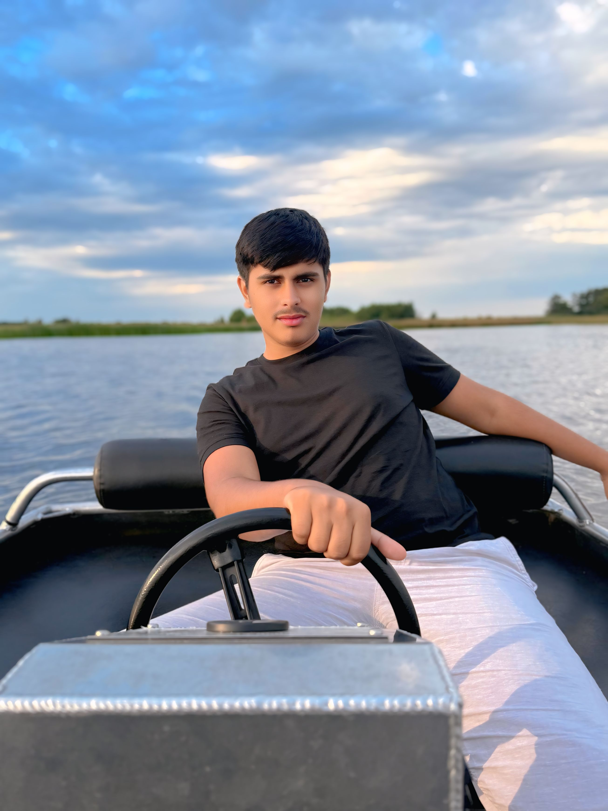
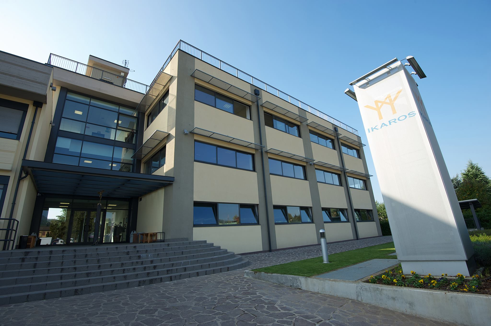
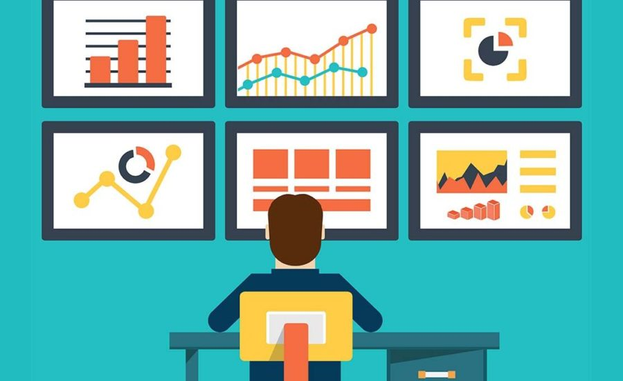
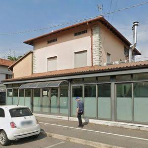

Ciao, sono Zain Akram
Studente di Informatica | Web Developer | Designer UX/UI
Chi Sono
Sono uno studente di Informatica con una forte passione per la tecnologia e lo sviluppo web. Mi dedico alla creazione di esperienze digitali moderne, responsive e performanti.
La mia specialità è lo sviluppo front-end con HTML5, CSS3 e JavaScript, combinato con principi di UX/UI design. Amo risolvere problemi complessi attraverso soluzioni eleganti e intuitive.
Attualmente sto ampliando le mie competenze in web design, progettazione software e analisi dei requisiti attraverso progetti sia scolastici che personali.
Scopri le mie competenze
I miei Servizi
Sviluppo Web
Creazione di siti web moderni, responsive e performanti utilizzando HTML5, CSS3 e JavaScript. Dal concept alla pubblicazione online.
Web Design
Progettazione di interfacce utente intuitive e attraenti. Design minimalista che combina estetica e funzionalità.
UX/UI Design
Analisi delle esigenze dell'utente, wireframing e prototipazione. Architettura dell'informazione ottimizzata per conversioni.
Ottimizzazione
Miglioramento della performance, SEO e accessibilità. Codice pulito, manutenibile e scalabile.
Responsive Design
Siti che si adattano perfettamente a tutti i dispositivi. Mobile-first approach per la migliore esperienza utente.
Consulenza Tecnica
Supporto nella scelta delle tecnologie più appropriate. Guida nello sviluppo e ottimizzazione di progetti web.
50+
Progetti Completati
100%
Soddisfazione Client
5+
Anni di Esperienza
15+
Tecnologie Utilizzate
Tecnologie Principali
Ultimi Progetti
Una selezione dei miei lavori più recenti. Ogni progetto rappresenta la mia passione per il design e la tecnologia.

Fondazione Ikarus Grumello
Progetto di analisi e progettazione di un sito web professionale per una fondazione. Focus su user experience e accessibilità.

Portfolio Personale
Portfolio moderno e responsive per la presentazione professionale online. Design minimalista con animazioni fluide.

Concept Sito Web Ristorante
Sito web responsive per attività di ristorazione con menù interattivo e sistema di prenotazioni online.
Pronto a iniziare il tuo progetto?
Contattami oggi per discutere delle tue idee e come posso aiutarti a portarle a vita.
Contattami ora